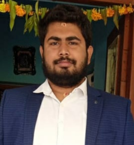

My Resume

Anshumaan Parida
phone number-7077907380/7978291906
Email- anshumaanparida736@gmail.com
://linkedin.com
Summary
I completed my graduation in chemical engineering. My research involves a multicomponent distillation of four different types of
oil samples using DWSIM modelling software. The second study I conducted on the subject
included ASPEN HYSYS simulation software to mimic the production of styrene via catalytic
dehydrogenation of ethylbenzene during my academic years, along with work experience as a
project lead in rural development sector for 3 years.
Education
Graduation:Bacholers degree
B.Tech in Chemical engineering from Veer Surendra Sai University of Technology
-
Higher Secondary Education:Science
passed from Laxmipat Singania Public School
-
Matriculation
passed from ICSE boad: Sacred Heart School
Work Experience
Professional Excutive: Pradan(NGO)
- Project Lead
worked for 1 and 1/2 years in three different projects
- Intern
1 year in jashipur learning about how to work in Rural Development Project
Skills
Simulation Software
- DWSIM Simulation Software
- ASPEN HYSYS simulation Software
- Critical Thinking And Decision Making
- Project Lead or Project Management
- Event Management
- Basic Python
Awards, Certification and Other Accomplishment
Awards
- Speaker: good at Debating Topics
- Communication Skills: Been the Part of three TED events
Certifications
- AIML training from CTTC
- Participation Cerificate At GLOBAL Entrepreneurship Summit
- Course on Coursera:ON Entrepreneur Development Skills
- AI powered Data Analyst by Be10X
- Other Accomplishment
- currently developing web development skills